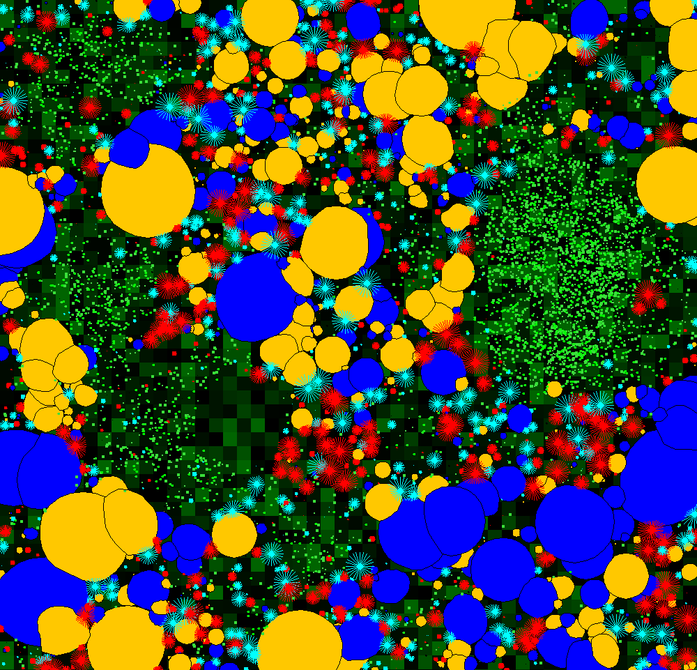

|  |
Spatial Interaction in Coral Reef CommunitiesBy Andreas Kubicek |
The program allows the simulation of spatial dynamics in a benthic coral reef community under various environmental settings in monthly iterations. Several coral species, with either massive or branching colony growth morphologies are implemented as individual colonies, which compete for space with each other as well as with macroalgae and algal turf.
Coral species can be parametrised with respect to different life history characteristics, such as growth, reproduction, competitive abilities and susceptibilities to environmental conditions, such as extreme temperature events.
Life history characteristics of macroalgae, such as reproduction, growth, maximum size and mortality can likewise be parametrised. Algal turf is parametrised in a more simple fashion.
Algae are controlled by grazing. Within each time step each alga will be eaten with a certain probablility which is dependent on the overall algal density and calculated as follows:
For more details on the program and its applicability see also:
Kubicek A, Muhando C, Reuter H (2012) Simulations of Long-Term Community Dynamics in Coral Reefs - How Perturbations Shape Trajectories. PLoS Comput Biol 8(11): e1002791. doi:10.1371/journal.pcbi.1002791
<>
http://www.ploscompbiol.org/doi/pcbi.1002791
This program is free software: you can redistribute it and/or modify
it under the terms of the GNU General Public License as published by
the Free Software Foundation, either version 3 of the License, or
(at your option) any later version. This program is distributed in the hope that it will be useful,
but WITHOUT ANY WARRANTY; without even the implied warranty of
MERCHANTABILITY or FITNESS FOR A PARTICULAR PURPOSE. See the
GNU General Public License for more details.